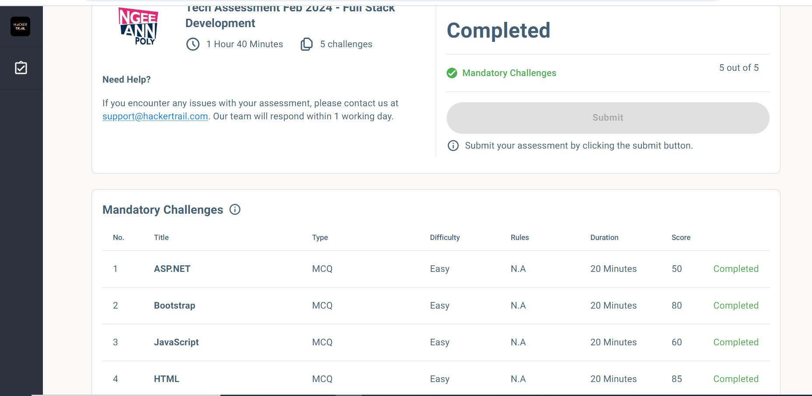
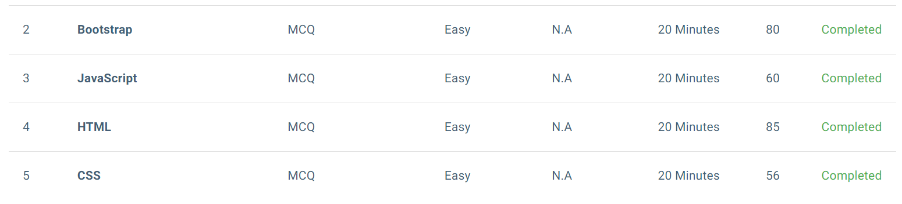

Portfolio Development Blog
Week 17
Tech Assessment:
My Github has another error again. Even though, I can still show the tech assessment.


Reflection:
As I did the tech assessment, I felt the questions were indeed tricky and tough even though it says easy as the difficulty level.
Using my own knowledge about programming got me a 50 and 56 for ASP.NET and CSS. I would admit that it may be an accurate representation
since I actually did not touch ASP.NET for the whole of this semester and my designing was not that great.
However, I am glad that I did well for HTML and bootstrap to my surprise.
Overall, I think I did quite well for full stack development, but I might need to work on my C# and css. Additionally, I really need to study up about Github.
It was really the main problem in the whole of PFD Module. I am glad I know where my knowledge stands at in Full-Stack.